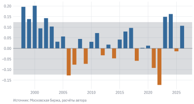
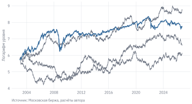
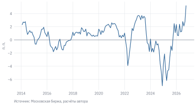
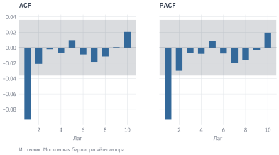

Если индекс Московской биржи сегодня вырос, стоит ли ждать роста и завтра? Посчитаем корреляцию между дневной доходностью индекса IMOEX и доходностью предыдущего дня за всю историю индекса, с 22.09.1997 по 29.09.2026. Она равна 0,063: небольшая, но положительная и статистически значимая. Кажется, рынок обладает «инерцией», и на ней можно заработать.
Посмотрим, однако, на отдельные годы. В 2022 г. та же корреляция была −0,17, то есть после роста чаще следовало падение. В 2023 г. она стала 0,15, в 2024 г. – 0,16, а в 2025 г. – −0,01. Правило «покупай после роста» в одни годы работало бы, в другие приносило бы убытки, и заранее не было бы известно, какой год наступил. Устойчива ли вообще зависимость доходности от прошлого? Как отличить настоящую закономерность от шума? И как построить прогноз, который не обманет на новых данных?
Эта глава вводит инструменты для ответа на такие вопросы: автокорреляционную функцию, тесты на стационарность и модели ARMA. Модели ARMA – отправная точка анализа временных рядов. Для доходностей акций они обычно показывают, что предсказать почти нечего. Этот отрицательный результат тоже важен: он задаёт планку, которую должна превзойти любая торговая стратегия. Зато для других рядов, например процентных спредов, модели ARMA описывают данные хорошо.
УведомлениеВ этой главе
Измеряем зависимость ряда от своего прошлого: автокорреляционная функция и тест Льюнга – Бокса.
Разбираем белый шум, случайное блуждание и стационарность; тесты ADF и KPSS.
Строим модели AR и MA на рядах, где они действительно уместны: терм-спред ОФЗ и неликвидная акция.
Выбираем порядок модели ARMA по информационным критериям и проверяем остатки.
Оцениваем прогноз вне выборки и разбираем типичные ошибки при прогнозировании.
Данные:indexes.parquet, stocks.parquet, zcyc.parquet (см. данные книги). Нужно знать: лог-доходности и волатильность (глава «Доходность и риск»), основы статистики: корреляция, проверка гипотез.
В примерах главы используются статистические функции из пакета statsmodels и модули книги.
Код
import numpy as npimport pandas as pdimport matplotlib.pyplot as pltfrom statsmodels.tsa.stattools import acf, pacf, adfuller, kpssfrom statsmodels.tsa.arima.model import ARIMAfrom statsmodels.stats.diagnostic import acorr_ljungboxfrom qf import data, plot
7.1 Автокорреляция
7.1.1 Корреляция ряда с собственным прошлым
Пусть \(r_t\) – доходность в день \(t\). Автокорреляция порядка \(k\) – это корреляция ряда с самим собой, сдвинутым на \(k\) периодов:
Число \(k\) называют лагом. Набор \(\rho_1, \rho_2, \dots\) как функция от лага – это автокорреляционная функция (ACF, autocorrelation function). По выборке из \(T\) наблюдений её оценивают выборочной автокорреляцией \(\hat\rho_k\): в числителе стоит средняя по выборке сумма произведений отклонений \(r_t\) и \(r_{t-k}\) от среднего, в знаменателе – выборочная дисперсия.
Даже если истинные автокорреляции равны нулю, выборочные будут отличаться от нуля из-за случайности. Для ряда независимых одинаково распределённых величин \(\hat\rho_k\) примерно нормальна со средним 0 и стандартным отклонением \(1/\sqrt{T}\). Отсюда граница значимости \(\pm 1{,}96/\sqrt{T}\): выборочная автокорреляция за её пределами на уровне 5% отличается от нуля. График ACF с этой полосой называют коррелограммой.
Граница \(\pm 1{,}96/\sqrt{T}\) быстро сужается с ростом выборки. За 20 лет набирается около 5 тыс. торговых дней, и граница опускается до 0,028. На таких выборках значимой оказывается даже очень слабая зависимость, которая не имеет никакого практического значения. К этому различию статистической и экономической значимости мы ещё вернёмся.
7.1.2 Коррелограмма доходностей и их модулей
Построим коррелограммы дневных лог-доходностей IMOEX с 2003 г. – периода, когда рынок акций уже стал достаточно ликвидным. Рядом поставим коррелограмму модулей доходности \(|r_t|\): она показывает, связана ли величина сегодняшнего движения с величиной вчерашнего, независимо от знака. Функцию для рисования коррелограммы оформим отдельно, она понадобится в главе ещё не раз.
Как читать эти графики? По горизонтали отложен лаг \(k\) в торговых днях, по вертикали – коэффициент корреляции между значением ряда в день \(t\) и его значением за \(k\) дней до этого. Коэффициент корреляции безразмерен и лежит в пределах от \(-1\) до \(1\), поэтому единицы измерения исходного ряда на графике не видны. На левой панели ряд – сами лог-доходности, на правой – их модули \(|r_t|\), то есть размер дневного движения индекса без учёта направления. Модуль измеряется в тех же единицах, что и доходность, – в долях единицы: \(|r_t| = 0{,}02\) означает, что индекс за день изменился примерно на 2% вверх или вниз. В среднем с 2003 г. \(|r_t|\) равен 1,2%, а в каждый десятый день превышает 2,5%. Столбик высотой около 0,3 на лаге 1 правой панели означает: если сегодня движение было крупнее обычного, то и завтра оно, скорее всего, будет крупнее обычного, хотя направление предсказать нельзя.
Два графика устроены совсем по-разному. Автокорреляции самих доходностей малы: первая равна −0,011 при границе значимости ±0,025. За границу выходят 13 из 30 лагов, но это следствие большой выборки: наибольшая по модулю автокорреляция равна всего 0,061. Автокорреляции модулей, напротив, велики и убывают очень медленно: 0,27 на первом лаге, 0,23 на пятом и ещё 0,16 на тридцатом, то есть спустя полтора месяца торгов.
Насколько эта картина устойчива? Модули доходности чувствительны к экстремальным дням, а их в выборке немало: 24.02.2022 лог-доходность индекса составила −0,40 (падение на 33%), осенью 2008 г. было несколько дней, когда индекс за день падал или рос на 15–30%. Кроме того, волатильность в кризисные годы в разы выше, чем в спокойные. Если выборка объединяет такие периоды, модули доходности коррелированы на любых лагах просто потому, что в бурный год они все большие, а в спокойный – все малые. Проверим это:
без 2008–2009 и 2022 гг. автокорреляция модулей равна 0,21 на первом лаге и 0,10 на тридцатом;
внутри спокойного периода 2010–2019 гг. – 0,17 и 0,09;
для рангов модулей, на которые выбросы не влияют, – 0,16 и 0,13.
Автокорреляция модулей на первых лагах остаётся на порядок выше границы значимости при любой проверке: кластеризация волатильности – не артефакт нескольких кризисов. Но «длинный хвост» коррелограммы на лагах 20–30 в заметной мере создают смены режима между годами. Отличать кратковременные всплески волатильности от долгих смен её уровня придётся и в следующей главе, при оценке моделей GARCH.
Это два из «стилизованных фактов» финансовых доходностей (Cont 2001 г.), которые наблюдаются на рынках разных стран и в разные периоды:
Cont, Rama. 2001 г. «Empirical Properties of Asset Returns: Stylized Facts and Statistical Issues». Quantitative Finance 1 (2): 223–36. https://doi.org/10.1080/713665670.
Линейная автокорреляция доходностей близка к нулю. Знак завтрашней доходности почти не зависит от знака сегодняшней.
Модули и квадраты доходностей сильно автокоррелированы. За днями больших движений следуют дни больших движений, за спокойными днями – спокойные. Это кластеризация волатильности, которую мы видели на графике скользящей волатильности в главе «Доходность и риск».
Отсюда важное различие. Некоррелированность доходностей не означает их независимости. Ряд может быть непредсказуем по знаку и при этом хорошо предсказуем по размаху колебаний. Модели ARMA этой главы описывают только первое – условное среднее ряда. Размах колебаний, то есть условную дисперсию, описывают модели GARCH из следующей главы.
7.1.3 Тест Льюнга – Бокса
Смотреть на коррелограмму лаг за лагом неудобно: при 30 лагах и уровне 5% в среднем полтора столбика выйдут за границу даже у чистого шума. Тест Льюнга – Бокса проверяет сразу гипотезу, что первые \(m\) автокорреляций равны нулю:
Если гипотеза верна, статистика \(Q(m)\) имеет распределение \(\chi^2\) с \(m\) степенями свободы. Большие значения \(Q\) и малые p-значения говорят о том, что в ряде есть автокорреляция. Применим тест с \(m = 10\) к доходностям IMOEX за несколько периодов.
Код
r_full = np.log(data.load_index("IMOEX").set_index("date")["close"]).diff().dropna()rows = []for start in ["1997", "2003", "2010", "2015"]: x = r_full.loc[start:] lb = acorr_ljungbox(x, lags=[10]) # таблица со статистикой и p-значением rows.append({"Период": f"{x.index[0].year}–{x.index[-1].year}","Наблюдений": len(x),"ACF(1)": acf(x, nlags=1)[1],"Граница ±1,96/√T": 1.96/ np.sqrt(len(x)),"p-значение Q(10)": lb["lb_pvalue"].iloc[0], })# Числа в русской записи: запятая, типографский минус, пробел между разрядамиru =lambda v, d=3: f"{v:,.{d}f}".replace(",", " ").replace(".", ",").replace("-", "−")pval =lambda v: "<0,0001"if v <1e-4else ru(v, 4)pd.DataFrame(rows).style.format( {"Наблюдений": lambda v: ru(v, 0), "ACF(1)": ru, "Граница ±1,96/√T": ru,"p-значение Q(10)": pval}).hide(axis="index")
Таблица 7.1: Первая автокорреляция и тест Льюнга – Бокса (10 лагов) для дневных доходностей IMOEX
Период
Наблюдений
ACF(1)
Граница ±1,96/√T
p-значение Q(10)
1997–2026
7 221
0,063
0,023
<0,0001
2003–2026
5 915
−0,011
0,025
0,0031
2010–2026
4 186
−0,035
0,030
0,0602
2015–2026
2 943
−0,053
0,036
0,0046
За всю историю индекса первая автокорреляция положительна, а тест уверенно отвергает отсутствие автокорреляции. Но почти весь этот эффект создают 1997–2002 гг., когда рынок был узким и цены многих акций индекса отставали от новостей. С 2003 г. первая автокорреляция отрицательна (−0,011), а с 2015 г. равна −0,053. Для периода с 2010 г. p-значение 0,06, и на уровне 5% гипотеза об отсутствии автокорреляции не отвергается.
Какой из этого вывод? Автокорреляция доходностей существует, но она мала, меняет знак и зависит от выбранного периода. Малое p-значение на длинной выборке говорит лишь о том, что корреляция, скорее всего, не равна нулю в точности. Оно ничего не говорит о том, достаточно ли она велика, чтобы на ней заработать после комиссий.
7.1.4 Автокорреляция по годам
СоветСначала предскажите
За всю историю IMOEX первая автокорреляция дневных доходностей положительна. Сколько, по-вашему, лет из трёх десятилетий она была отрицательной? Сколько раз она по модулю превышала 0,1?
Код
# Автокорреляция доходности с доходностью предыдущего дня внутри каждого годаby_year = r_full.groupby(r_full.index.year).apply(lambda x: x.autocorr(1)).loc[1998:]fig, ax = plt.subplots()band =1.96/ np.sqrt(250)ax.axhspan(-band, band, color=plot.GREY, alpha=0.25, lw=0)ax.bar(by_year.index, by_year, color=np.where(by_year >0, plot.BLUE, plot.ORANGE), width=0.7)ax.axhline(0, color=plot.LIGHT, lw=0.6)plot.source(ax, "Московская биржа, расчёты автора")plt.show()

Рисунок 7.2: Первая автокорреляция дневных доходностей IMOEX по годам. Серая полоса – граница значимости для года из 250 торговых дней; 2026 г. – по конец сентября
Из 29 лет с 1998 г. первая автокорреляция была отрицательной в 9, а по модулю превышала 0,1 в 10. Устойчиво положительной она была только в 1998–2003 гг., на узком рынке тех лет. С 2004 г. отрицательных лет 9 из 23, а самые большие по модулю значения обоих знаков пришлись на последние годы: −0,17 в 2022 г., 0,15 и 0,16 в 2023 и 2024 гг.
Обратите внимание на парадокс. Средняя по годам автокорреляция с 2004 г. положительна (0,009), а посчитанная по всему периоду с 2003 г. – отрицательна (−0,011). Объединённая оценка придаёт больший вес годам с высокой волатильностью, а в бурном 2022 г. автокорреляция была сильно отрицательной. Если вывод о знаке зависимости меняется от способа усреднения, устойчивой закономерности, скорее всего, нет. Это типичная картина для ликвидного рынка: если бы устойчивая автокорреляция существовала, участники быстро бы её использовали и тем самым устранили.
Похожую проверку можно провести на недельных и месячных доходностях. Автокорреляции на более длинных горизонтах иногда оказываются больше, но и наблюдений становится в 5 и в 20 раз меньше, поэтому граница значимости расширяется во столько же корней раз. Классическую проверку гипотезы случайного блуждания через сравнение дисперсий доходностей на разных горизонтах предложили Lo и MacKinlay (1988 г.). Мы вернёмся к этой идее в упражнениях.
7.2 Стационарность
7.2.1 Белый шум и случайное блуждание
Две простейшие модели временного ряда служат точками отсчёта для всего остального.
Белый шум\(\varepsilon_t\) – последовательность величин с нулевым средним, постоянной дисперсией \(\sigma^2\) и нулевыми автокорреляциями на всех лагах. Его коррелограмма целиком лежит в пределах полосы значимости. Если к тому же величины независимы и нормальны, говорят о гауссовском белом шуме.
Случайное блуждание – ряд, приращения которого являются белым шумом:
Если \(p_t\) – логарифм цены, то \(p_t - p_{t-1} = r_t\) – лог-доходность, и гипотеза случайного блуждания цены – это гипотеза о том, что доходности являются белым шумом со средним \(\mu\). Первый раздел главы показал, что для IMOEX это неплохое приближение, если говорить об автокорреляциях доходностей (но не их модулей).
Случайное блуждание обманчиво: оно выглядит так, будто в нём есть тренды, циклы и уровни поддержки. Сравним логарифм индекса IMOEX с тремя искусственными рядами. Каждый из них – случайное блуждание, шаги которого взяты из нормального распределения с тем же средним и стандартным отклонением, что у дневных доходностей индекса.
Код
rng = np.random.default_rng(7) # фиксируем зерно для воспроизводимостиlog_p = np.log(imoex)fig, ax = plt.subplots()for i inrange(3):# Случайное блуждание: накопленная сумма нормальных шагов, старт с того же уровня steps = rng.normal(r.mean(), r.std(), size=len(r)) walk = log_p.iloc[0] + np.concatenate([[0], steps.cumsum()]) ax.plot(log_p.index, walk, color=plot.GREY, lw=0.8)ax.plot(log_p.index, log_p, color=plot.BLUE, lw=1.2)ax.set_ylabel("Логарифм уровня")plot.source(ax, "Московская биржа, расчёты автора")plt.show()

Рисунок 7.3: Логарифм IMOEX (синим) и три случайных блуждания с той же средней доходностью и волатильностью
На первый взгляд серые линии мало отличаются от синей. В каждой можно увидеть «бычий рынок», «коррекцию» и «боковик», хотя никакой закономерности в них нет по построению. Это полезная прививка от поиска фигур технического анализа на графике цены.
7.2.2 Что такое стационарность
Ряд называют (слабо) стационарным, если его среднее и дисперсия не меняются во времени, а ковариация между \(x_t\) и \(x_{t-k}\) зависит только от лага \(k\), но не от момента \(t\). Стационарность нужна, чтобы по одной реализации ряда можно было оценивать его свойства: среднее, ACF, параметры модели. Если свойства ряда меняются, то выборочное среднее за 20 лет описывает не «среднее ряда», а просто среднее за эти 20 лет.
Случайное блуждание нестационарно: его дисперсия растёт со временем, \(\operatorname{Var}(p_t) = t\sigma^2\), а шок \(\varepsilon_t\) не затухает и остаётся в уровне ряда навсегда. Про такой ряд говорят, что у него есть единичный корень, или что он интегрирован первого порядка, \(I(1)\). Его первая разность стационарна, \(I(0)\). Цены активов обычно ведут себя как \(I(1)\), доходности – как \(I(0)\). Поэтому модели этой главы строят для доходностей, а не для цен.
ПредупреждениеТипичная ошибка: регрессия уровня на уровень
Корреляция двух цен почти ничего не говорит о связи между активами. Мы сгенерировали 1000 пар независимых случайных блужданий длиной 1000 шагов. У 46% пар корреляция уровней по модулю превысила 0,5, а у приращений тех же рядов – у 0%. Это явление называют ложной регрессией. Прежде чем считать корреляции, строить регрессии или модели ARMA, переходите от цен к доходностям. Исключение составляет коинтеграция, когда у двух нестационарных рядов есть стационарная комбинация; её мы не рассматриваем.
7.2.3 Тесты ADF и KPSS
Визуально отличить единичный корень от очень медленно затухающего стационарного ряда трудно, поэтому используют формальные тесты. Два самых распространённых построены на противоположных нулевых гипотезах.
Тест Дики – Фуллера (ADF, augmented Dickey – Fuller). Нулевая гипотеза: у ряда есть единичный корень (ряд нестационарен). Малое p-значение – аргумент в пользу стационарности.
Тест KPSS (Kwiatkowski – Phillips – Schmidt – Shin). Нулевая гипотеза: ряд стационарен. Малое p-значение – аргумент в пользу нестационарности.
Тесты проверяют разные гипотезы, поэтому их полезно применять вместе:
Таблица 7.2: Как читать тесты ADF и KPSS вместе
ADF
KPSS
Вывод
отвергает \(H_0\)
не отвергает \(H_0\)
ряд стационарен
не отвергает \(H_0\)
отвергает \(H_0\)
ряд нестационарен
не отвергает \(H_0\)
не отвергает \(H_0\)
данных мало, тесты не различают гипотезы
отвергает \(H_0\)
отвергает \(H_0\)
противоречие: возможен структурный сдвиг или изменение дисперсии
Применим оба теста к логарифму индекса и к его доходностям.
def stationarity_tests(x, trend="c"):"""p-значения тестов ADF (H0: единичный корень) и KPSS (H0: стационарность). trend="c" – в уравнении теста есть константа, trend="ct" – константа и линейный тренд. """return {"ADF, p": adfuller(x, regression=trend)[1],"KPSS, p": kpss(x, regression=trend, nlags="auto")[1]}# У логарифма цены есть снос вверх, поэтому для него включаем трендpd.DataFrame({"Логарифм цены": stationarity_tests(log_p, trend="ct"),"Доходность": stationarity_tests(r)}).T.style.format("{:.3f}", decimal=",")
Таблица 7.3: Тесты ADF и KPSS: логарифм IMOEX и дневные доходности, 2003–2026 гг.
ADF, p
KPSS, p
Логарифм цены
0,088
0,010
Доходность
0,000
0,100
Код
library(tseries)log_p<-log(imoex$close)adf.test(log_p)# H0: единичный корень; тренд включён всегда#> #> Augmented Dickey-Fuller Test#> #> data: log_p#> Dickey-Fuller = -3.0961, Lag order = 18, p-value = 0.1141#> alternative hypothesis: stationarykpss.test(log_p, null ="Trend")# H0: стационарность вокруг тренда#> #> KPSS Test for Trend Stationarity#> #> data: log_p#> KPSS Trend = 2.448, Truncation lag parameter = 11, p-value = 0.01adf.test(r)#> #> Augmented Dickey-Fuller Test#> #> data: r#> Dickey-Fuller = -17.862, Lag order = 18, p-value = 0.01#> alternative hypothesis: stationarykpss.test(r)#> #> KPSS Test for Level Stationarity#> #> data: r#> KPSS Level = 0.28387, Truncation lag parameter = 11, p-value = 0.1
Для логарифма цены ADF не отвергает единичный корень (p = 0,09), а KPSS отвергает стационарность: цена ведёт себя как случайное блуждание. Для доходностей всё наоборот: ADF уверенно отвергает единичный корень, KPSS не отвергает стационарность. Результат зависит от спецификации теста. У логарифма цены есть снос вверх, поэтому в уравнение теста мы включили тренд (regression="ct"). Если оставить только константу, ADF для периода с 2003 г. даёт p = 0,042 и формально отвергает единичный корень на уровне 5%, хотя по всей истории индекса с трендом p = 0,66. Пограничные p-значения теста на единичный корень – повод не для уверенного вывода, а для проверки его устойчивости к спецификации и периоду.
Табличные p-значения KPSS ограничены диапазоном от 0,01 до 0,1, поэтому значения 0,010 и 0,100 в таблице означают «0,01 или меньше» и «0,1 или больше».
Стационарность доходностей по этим тестам не означает, что их свойства постоянны. Средняя доходность стационарна, а волатильность, как мы видели, меняется из года в год. Тесты на единичный корень проверяют только одну форму нестационарности.
7.3 Модель AR(1): терм-спред ОФЗ
7.3.1 Устройство модели
Модель авторегрессии первого порядка AR(1) говорит, что сегодняшнее значение ряда – это доля вчерашнего плюс шок:
При \(|\varphi| < 1\) ряд стационарен и колеблется вокруг среднего \(\mu = c/(1-\varphi)\), возвращаясь к нему после каждого шока. Это свойство называют возвратом к среднему (mean reversion). Параметр \(\varphi\) задаёт скорость возврата: отклонение от среднего через \(h\) периодов в среднем уменьшается в \(\varphi^h\) раз. Удобная мера скорости – период полураспада, за который отклонение сокращается вдвое:
При \(\varphi = 1\) модель превращается в случайное блуждание, и возврата к среднему нет.
У модели AR(1) характерная коррелограмма: автокорреляции убывают геометрически, \(\rho_k = \varphi^k\). Чтобы отличить AR(1) от процессов с более длинной памятью, используют частную автокорреляционную функцию (PACF, partial autocorrelation function). Частная автокорреляция на лаге \(k\) – это коэффициент при \(x_{t-k}\) в регрессии \(x_t\) на \(x_{t-1}, \dots, x_{t-k}\), то есть связь с \(k\)-м лагом за вычетом того, что объясняют более близкие лаги. У модели AR(1) частная автокорреляция отлична от нуля только на первом лаге: всё, что \(x_{t-2}\) говорит о \(x_t\), уже содержится в \(x_{t-1}\).
7.3.2 Данные: разница между длинными и короткими ставками
Доходности акций плохо подходят для иллюстрации AR(1): у них почти нет автокорреляции. Возьмём ряд, у которого память точно есть, – терм-спред, разницу между доходностями длинных и коротких государственных облигаций. Используем кривую бескупонной доходности ОФЗ, которую публикует Московская биржа, и возьмём разницу доходностей на сроках 10 лет и 3 месяца на конец каждого месяца.
Код
# Кривая бескупонной доходности: строки – даты, столбцы – сроки в годахzcyc = data.load_zcyc().pivot_table(index="date", columns="period", values="value")# Терм-спред на последний торговый день каждого месяцаspread = (zcyc[10.0] - zcyc[0.25]).resample("ME").last().dropna()fig, ax = plt.subplots()ax.plot(spread.index, spread, color=plot.BLUE)ax.axhline(0, color=plot.LIGHT, lw=0.6)ax.set_ylabel("п. п.")plot.source(ax, "Московская биржа, расчёты автора")plt.show()

Рисунок 7.4: Терм-спред ОФЗ: разница бескупонных доходностей на сроках 10 лет и 3 месяца, конец месяца, п. п.
В нормальной ситуации длинные ставки выше коротких: инвестор требует премию за то, что вкладывает деньги надолго, и терм-спред положителен. Но в России спред часто уходил в минус – в 33% месяцев с 2014 г. Так бывает, когда Банк России резко поднимает ключевую ставку: короткие ставки идут вслед за ключевой, а длинные растут меньше, потому что рынок ожидает её снижения в будущем. Минимум, −7,0 п. п., был в ноябре 2024 г., когда ключевая ставка достигла 21%. После начала цикла снижения ставки спред вернулся в плюс.
spread<-qf_load_zcyc()|>filter(period%in%c(0.25, 10))|>group_by(date)|>filter(n()==2)|># оба срока есть на датуsummarise(s =value[period==10]-value[period==0.25])|>group_by(month =format(date, "%Y-%m"))|>slice_tail(n =1)|># последний день месяцаungroup()ar1<-Arima(spread$s, order =c(1, 0, 0))ar1#> Series: spread$s #> ARIMA(1,0,0) with non-zero mean #> #> Coefficients:#> ar1 mean#> 0.8992 0.8195#> s.e. 0.0369 0.7014#> #> sigma^2 = 0.8378: log likelihood = -203.38#> AIC=412.76 AICc=412.92 BIC=421.85
Оценка \(\varphi\) равна 0,899: терм-спред очень инерционен. Период полураспада по формуле 7.5 – около 6,5 месяца: отклонение спреда от среднего уменьшается вдвое примерно за полгода.
ПредупреждениеТипичная ошибка: константа – это не свободный член
В выдаче statsmodels коэффициент const равен 0,82, и его легко принять за \(c\) в формуле 7.4. На самом деле ARIMA в statsmodels (как и Arima в R, где он называется mean или intercept) оценивает среднее ряда\(\mu\). Свободный член уравнения равен \(c = \mu(1-\varphi) =\) 0,083. Путаница ведёт к неверным прогнозам, если строить их вручную по формуле.
А стационарен ли терм-спред вообще? Тест ADF даёт p = 0,065, то есть на уровне 5% единичный корень формально не отвергается. Причина – в малой мощности теста: у нас 153 месячных наблюдения, а \(\varphi\) близко к единице. На таких данных ADF плохо отличает медленный возврат к среднему от случайного блуждания. Здесь помогает экономическая логика: спред между ставками одной и той же кривой не может неограниченно уходить в сторону, как цена акции. Поэтому модель AR(1) для него разумна, но к её прогнозам на дальний горизонт стоит относиться осторожно.
7.4 Модель MA(1): неликвидная акция
7.4.1 Устройство модели
Модель скользящего среднего первого порядка MA(1) строится не из прошлых значений ряда, а из прошлых шоков:
Сегодняшний шок влияет на сегодняшнее значение и, с весом \(\theta\), на завтрашнее, а дальше забывается. Поэтому у MA(1) картина обратная AR(1): автокорреляция отлична от нуля только на первом лаге, \(\rho_1 = \theta/(1+\theta^2)\), и обрывается после него, а частная автокорреляция затухает постепенно.
7.4.2 Эффект отскока между bid и ask
Откуда в доходностях берётся такая память на один день? Классическое объяснение предложил Roll (1984 г.). Сделки на бирже проходят то по цене продавца (ask), то по цене покупателя (bid). Даже если «справедливая» цена не меняется, цена закрытия прыгает между ними, и за ростом от bid к ask чаще следует падение обратно. Это создаёт отрицательную автокорреляцию первого порядка. Если спред между ask и bid равен \(s\), ковариация соседних изменений цены равна \(-s^2/4\). Отсюда оценка спреда по одним только ценам закрытия: \(\hat s = 2\sqrt{-\operatorname{Cov}(r_t, r_{t-1})}\).
У ликвидных акций спред составляет сотые доли процента, и эффект незаметен. У неликвидных бумаг он может быть заметным. Возьмём обыкновенные акции ПАО «Нижнекамскнефтехим» (ИНН 1651000010, тикер NKNC) – крупной нефтехимической компании, большая часть акций которой не находится в свободном обращении. Для сравнения используем самую ликвидную акцию рынка – Сбербанк (SBER).
Код
def load_returns(ticker, start="2015-01-01"):"""Дневные лог-доходности по ценам с поправкой на дивиденды и медианный оборот, млн руб.""" df = data.load_stocks(ticker, start=start).set_index("date")return np.log(df["adj_close"]).diff().dropna(), df["value_rub"].median() /1e6r_nk, turnover_nk = load_returns("NKNC")r_sb, turnover_sb = load_returns("SBER")fig, axes = plt.subplots(1, 2, figsize=(6.5, 2.8), sharey=True)plot_acf_bars(axes[0], r_nk, nlags=10, kind="acf", title="ACF")plot_acf_bars(axes[1], r_nk, nlags=10, kind="pacf", title="PACF")plot.source(axes[0], "Московская биржа, расчёты автора", offset=32)plt.show()

Рисунок 7.6: ACF и PACF дневных доходностей акций NKNC, 2015–2026 гг.
Код
# Модели MA(1) и AR(1) для доходностей NKNC (в процентах – так оптимизатору проще)ma1_nk = ARIMA(r_nk.values *100, order=(0, 0, 1)).fit()ar1_nk = ARIMA(r_nk.values *100, order=(1, 0, 0)).fit()# Оценка спреда по Роллу: s = 2 * sqrt(-Cov(r_t, r_{t-1}))cov1 = np.cov(r_nk.values[1:], r_nk.values[:-1])[0, 1]roll_spread =2* np.sqrt(-cov1) if cov1 <0else np.nanpd.Series({"θ (MA(1))": ma1_nk.params[1], "BIC MA(1)": ma1_nk.bic, "BIC AR(1)": ar1_nk.bic,"Спред по Роллу, %": roll_spread *100}).round(3)#> θ (MA(1)) -0.099#> BIC MA(1) 13300.993#> BIC AR(1) 13302.407#> Спред по Роллу, % 1.417#> dtype: float64
Медианный дневной оборот NKNC с 2015 г. – около 2,6 млн руб., у Сбербанка – около 9,8 млрд руб., в тысячи раз больше. Первая автокорреляция доходностей NKNC равна −0,093, а на втором лаге – всего −0,021: картина обрыва после первого лага, как у MA(1). У Сбербанка первая автокорреляция −0,004 и неотличима от нуля. Оценка \(\theta\) в модели MA(1) – −0,099, что соответствует \(\rho_1 =\) −0,098, близко к выборочной автокорреляции. По BIC модель MA(1) немного лучше AR(1), хотя разница невелика: при \(|\theta|\) около 0,1 модели AR(1) и MA(1) почти неразличимы.
Спред по формуле Ролла получается около 1,4%. Это грубая оценка: в ковариацию попадают не только отскоки между bid и ask, но и любые другие краткосрочные эффекты. Но порядок величины разумен для бумаги, по которой в 5% торговых дней цена не менялась вовсе.
Важно, что отрицательная автокорреляция здесь не сулит прибыли. Она возникает из-за того, что цена прыгает внутри спреда, а чтобы на этом заработать, нужно покупать по bid и продавать по ask, то есть самому быть маркет-мейкером. Инвестор, торгующий по рыночным заявкам, заплатит этот спред сам. Микроструктуре рынка и измерению ликвидности посвящена отдельная глава книги.
7.5 Модели ARMA и выбор порядка
7.5.1 Общая модель
Модели AR и MA объединяются в модель ARMA\((p, q)\) с \(p\) авторегрессионными лагами и \(q\) лагами шоков:
Если ряд перед моделированием дифференцируют \(d\) раз, получается модель ARIMA\((p, d, q)\); отсюда аргумент order=(p, d, q) в statsmodels. Для доходностей \(d = 0\), для логарифма цены \(d = 1\), и это одна и та же модель.
Классическая процедура Бокса – Дженкинса строит модель в четыре шага: идентификация (выбор \(p\) и \(q\) по коррелограммам), оценка параметров, диагностика остатков и прогноз. Для идентификации служат подписи моделей в ACF и PACF:
Таблица 7.4: Как выглядят модели AR, MA и ARMA на коррелограммах
Модель
ACF
PACF
AR\((p)\)
затухает постепенно
обрывается после лага \(p\)
MA\((q)\)
обрывается после лага \(q\)
затухает постепенно
ARMA\((p, q)\)
затухает постепенно
затухает постепенно
7.5.2 Информационные критерии
На реальных данных подписи редко бывают такими чёткими, как у терм-спреда. Поэтому порядок модели чаще выбирают по информационным критериям. Они поощряют модель за правдоподобие \(L\) и штрафуют за число параметров \(k\):
\[
\text{AIC} = -2\ln L + 2k, \qquad \text{BIC} = -2\ln L + k\ln T.
\tag{7.8}\]
Выбирают модель с наименьшим значением критерия. Лишний параметр почти всегда немного увеличивает правдоподобие, и критерии требуют, чтобы это увеличение окупало штраф. BIC при \(T > 7\) штрафует сильнее AIC и выбирает более простые модели. AIC нацелен на качество прогноза, BIC – на поиск «истинной» модели, если она есть среди кандидатов.
Переберём модели ARMA\((p, q)\) с \(p, q \in \{0, 1, 2\}\) для дневных доходностей IMOEX. Оценивать будем на обучающем периоде 2003–2019 гг., а 2020–2026 гг. оставим для проверки прогноза вне выборки. Доходности умножим на 100, чтобы оценки были в процентах.
r100 = r *100# доходности в процентахtrain, test = r100.loc[:"2019-12-31"], r100.loc["2020-01-01":]grid = []for p inrange(3):for q inrange(3):# .values: даты торговых дней идут с пропусками, частоту statsmodels не нужна m = ARIMA(train.values, order=(p, 0, q)).fit() grid.append({"p": p, "q": q, "AIC": m.aic, "BIC": m.bic})grid = pd.DataFrame(grid)# Разница с лучшей моделью по каждому критериюtab = grid.assign(AIC=grid.AIC - grid.AIC.min(), BIC=grid.BIC - grid.BIC.min())tab.pivot(index="p", columns="q", values=["AIC", "BIC"]).style.format("{:.1f}", decimal=",")
Таблица 7.5: Информационные критерии моделей ARMA(p, q) для дневных доходностей IMOEX, 2003–2019 гг. Значения за вычетом минимума: 0 – лучшая модель
AIC
BIC
q
0
1
2
0
1
2
p
0
0,0
1,5
2,4
0,0
7,8
15,1
1
1,5
1,9
0,1
7,8
14,5
19,1
2
2,4
0,0
1,7
15,1
19,0
27,1
Функция auto.arima() из пакета forecast перебирает модели и выбирает лучшую по заданному критерию.
Код
r100<-100*rtrain<-r100[imoex$date[-1]<=as.Date("2019-12-31")]# stepwise = FALSE – полный перебор, а не пошаговый поискauto.arima(train, d =0, max.p =2, max.q =2, ic ="bic", stepwise =FALSE, approximation =FALSE)#> Series: train #> ARIMA(0,0,0) with zero mean #> #> sigma^2 = 3.725: log likelihood = -8776.97#> AIC=17555.94 AICc=17555.94 BIC=17562.29
BIC выбирает модель ARMA(0, 0). Это константа плюс белый шум: лучший прогноз завтрашней доходности равен средней доходности. Ни одна из более сложных моделей не улучшает правдоподобие настолько, чтобы окупить дополнительные параметры. Например, ARMA(2, 2) по BIC хуже константы на 27,1.
AIC штрафует мягче и выбирает ARMA(2, 1), но по AIC она лучше константы всего на 0,01, то есть модели практически равноценны. Посмотрите на оценки: коэффициент авторегрессии на первом лаге 0,77, коэффициент скользящего среднего −0,76. Они почти равны по модулю и противоположны по знаку, поэтому их вклады почти взаимно сокращаются. В простейшем случае ARMA(1, 1) в записи через оператор лага \(L\) (\(Lx_t = x_{t-1}\)) модель имеет вид \((1 - \varphi L)x_t = (1 + \theta L)\varepsilon_t\), и при \(\theta \approx -\varphi\) множители слева и справа сокращаются, оставляя белый шум. Такое «сокращение корней» – частый признак того, что модель подогнана под шум. Вне выборки она ведёт себя соответственно: \(R^2_{OOS}\) против исторического среднего равен −0,0054 (эту меру мы введём в разделе 7.7).
Этот результат согласуется с первым разделом главы: линейная память в дневных доходностях индекса слишком слаба, чтобы на ней строить модель.
7.6 Диагностика остатков
Хорошая модель должна извлечь из ряда всю линейную зависимость, и её остатки \(\hat\varepsilon_t\) должны быть похожи на белый шум. Стандартная проверка – тест Льюнга – Бокса по остаткам. Число степеней свободы при этом уменьшают на число оценённых параметров \(p + q\) (аргумент model_df).
Код
best = ARIMA(train.values, order=(int(best_bic.p), 0, int(best_bic.q))).fit()resid = best.residdf_model =int(best_bic.p + best_bic.q)# p-значения теста для 10 лагов: по остаткам и по их квадратамpd.Series({"Остатки": acorr_ljungbox(resid, lags=[10], model_df=df_model)["lb_pvalue"].iloc[0],"Квадраты остатков": acorr_ljungbox(resid**2, lags=[10], model_df=df_model)["lb_pvalue"].iloc[0],}, name="p-значение Q(10)")#> Остатки 1.789733e-03#> Квадраты остатков 3.968749e-287#> Name: p-значение Q(10), dtype: float64
По остаткам тест даёт p = 0,0018, то есть формально какая-то автокорреляция в них осталась. Мы уже знаем её природу: на длинной выборке значимыми оказываются автокорреляции порядка сотых, которые меняют знак от года к году. Информационные критерии, которые учитывают размер эффекта, а не только его значимость, сочли, что моделировать её не стоит.
Намного важнее результат для квадратов остатков. Для них статистика \(Q(10)\) равна 1 365, а p-значение неотличимо от нуля. Остатки некоррелированы, но не независимы: их размах сильно зависит от прошлого. Модель ARMA описывает условное среднее и предполагает постоянную дисперсию шока, а у доходностей она явно меняется. Такой эффект называют условной гетероскедастичностью, и для него нужны модели ARCH и GARCH из следующей главы.
7.7 Прогноз вне выборки
7.7.1 Как устроен честный прогноз
Модель, которая хорошо описывает прошлое, не обязательно хорошо предсказывает будущее. Единственная надёжная проверка – прогноз вне выборки (out-of-sample), на данных, которые не участвовали ни в выборе модели, ни в оценке её параметров. Схема такая:
Разделить ряд на обучающую и тестовую части по времени, без перемешивания.
Выбрать модель и оценить параметры только на обучающей части.
Для каждого дня тестовой части построить прогноз на один шаг вперёд, используя только данные, известные к этому дню.
Сравнить ошибки прогноза с ошибками простого эталона.
На третьем шаге есть два варианта. Можно после каждого нового наблюдения переоценивать параметры на расширяющемся окне – это честнее, но медленнее. Можно оставить параметры, оценённые на обучающей части, и только подставлять в модель новые значения ряда. Для дневных данных с тысячами точек обычно достаточно второго варианта; в statsmodels он реализован методом apply().
где \(\hat r_t\) – прогноз модели, а \(\bar r_t\) – прогноз эталона, например историческое среднее доходности на момент прогноза. Положительный \(R^2_{OOS}\) означает, что модель предсказывает лучше эталона, отрицательный – хуже.
7.7.2 Доходности индекса
Выбранная BIC модель ARMA(0, 0) прогнозирует константу. Чтобы проверка была содержательной, возьмём модель AR(1), которая использует вчерашнюю доходность, и сравним её с двумя эталонами: историческим средним и нулём.
Код
# AR(1) на обучающем периоде; параметры дальше не меняемar1_r = ARIMA(train.values, order=(1, 0, 0)).fit()# apply() прогоняет модель с теми же параметрами по всему ряду;# predict() даёт прогноз на шаг вперёд для каждого дня по данным до негоpred = ar1_r.apply(r100.values).predict()[len(train):]# Историческое среднее: для каждого дня – средняя доходность по всем предыдущим днямhist_mean = r100.expanding().mean().shift(1).loc[test.index].valuesactual = test.valuesmse =lambda f: np.mean((actual - f) **2)pd.Series({"φ в AR(1)": ar1_r.params[1],"R² OOS против среднего": 1- mse(pred) / mse(hist_mean),"R² OOS против нуля": 1- mse(pred) / mse(np.zeros_like(actual)),"Доля верно угаданных знаков": np.mean(np.sign(pred) == np.sign(actual)),"Доля дней роста": np.mean(actual >0),}).round(4)#> φ в AR(1) 0.0111#> R² OOS против среднего -0.0019#> R² OOS против нуля -0.0031#> Доля верно угаданных знаков 0.5270#> Доля дней роста 0.5317#> dtype: float64
Оценка \(\varphi\) на обучающем периоде – 0,011, почти ноль. На 1 687 днях теста модель AR(1) проигрывает обоим эталонам: \(R^2_{OOS}\) против исторического среднего равен −0,0019, против нуля – −0,0031. Модель угадывает знак доходности в 52,7% дней, при том что доля дней роста в тестовом периоде – 53,2%. Ничего удивительного: прогноз модели положителен в 99% дней, и почти весь «успех» в угадывании знака объясняется тем, что рынок растёт чаще, чем падает.
Это типичный результат. Welch и Goyal (2008 г.) показали, что десятки переменных, которые в литературе считались предикторами доходности американского рынка, вне выборки обычно не превосходят историческое среднее. Отрицательный \(R^2_{OOS}\) простых моделей – не провал анализа, а честная характеристика рынка и планка для любой торговой стратегии, о чём подробнее пойдёт речь в главе о бэктестинге.
7.7.3 Терм-спред
Теперь повторим проверку для терм-спреда, где память в данных точно есть. Здесь рядов немного, поэтому будем переоценивать модель каждый месяц на расширяющемся окне. Эталонов три: модель AR(1), случайное блуждание (прогноз равен последнему значению) и историческое среднее.
Код
test_months = spread.loc["2020-01-01":].indexfc = {"AR(1)": [], "Случайное блуждание": [], "Историческое среднее": []}for d in test_months: hist = spread.loc[:d].iloc[:-1] # только данные до месяца прогноза model = ARIMA(hist, order=(1, 0, 0)).fit() # переоцениваем на расширяющемся окне fc["AR(1)"].append(model.forecast(1).iloc[0]) fc["Случайное блуждание"].append(hist.iloc[-1]) fc["Историческое среднее"].append(hist.mean())actual_sp = spread.loc[test_months].valuesrmse = {k: np.sqrt(np.mean((actual_sp - np.array(v)) **2)) for k, v in fc.items()}pd.Series(rmse, name="RMSE, п. п.").round(3)#> AR(1) 1.181#> Случайное блуждание 1.183#> Историческое среднее 2.514#> Name: RMSE, п. п., dtype: float64
Модель AR(1) предсказывает терм-спред на следующий месяц вдвое точнее исторического среднего: среднеквадратичная ошибка 1,18 п. п. против 2,51. Но случайное блуждание даёт почти ту же точность (1,18 п. п.). При \(\varphi \approx 0{,}9\) почти вся информация о следующем значении содержится в последнем, и учёт возврата к среднему уточняет прогноз на месяц вперёд совсем немного. Преимущество модели AR(1) над случайным блужданием проявляется на более длинных горизонтах, где возврат к среднему успевает накопиться.
ПредупреждениеТипичная ошибка: константный прогноз и заглядывание в будущее
Частая ошибка – обучить модель один раз и затем в цикле по тестовому периоду вызывать forecast(steps=1):
Код
model = ARIMA(train, order=(1, 0, 1)).fit()preds = [model.forecast(steps=1)[0] for day in test.index] # неправильно
Модель ничего не знает о новых наблюдениях, поэтому все прогнозы в списке одинаковы: это прогноз на первый день теста, повторённый много раз. Похожая ошибка – вызвать forecast(steps=len(test)). Это многошаговый прогноз из последней точки обучающей выборки, который быстро сходится к среднему ряда (см. ниже), а не последовательность прогнозов на день вперёд. Правильно – обновлять модель новыми данными через apply() или append() либо переоценивать её в цикле, как в примере с терм-спредом.
Противоположная ошибка – заглядывание в будущее: модель оценивают по всей выборке, включая тестовый период, а затем «проверяют» на нём. Такая проверка завышает качество, потому что параметры уже подстроены под тестовые данные. Выбор порядка модели по критериям на всей выборке – тоже заглядывание в будущее.
7.7.4 Многошаговый прогноз
Прогноз модели AR(1) на \(h\) шагов вперёд из точки \(T\) равен
С ростом горизонта \(\varphi^h \to 0\), и прогноз сходится к среднему ряда, а доверительный интервал расширяется до безусловного разброса ряда. Для модели ARMA(0, 0) прогноз на любой горизонт равен среднему с самого начала. Построим прогноз терм-спреда на два года вперёд по модели, оценённой на всех данных.
Последнее значение спреда, 5,2 п. п., – максимум за всю историю ряда. Модель ожидает, что через год спред снизится до 2,0 п. п., а через два – до 1,2 п. п., приближаясь к среднему. Но 95%-й интервал через два года – от −2,9 до 5,2 п. п., то есть модель допускает и сохранение высокого спреда, и его инверсию. Модель честно показывает, как быстро прогноз по прошлому ряда теряет информативность. Прогноз на дальний горизонт требует других данных: ожиданий по ключевой ставке, инфляции, бюджетной политике.
Итоги
Автокорреляционная функция измеряет линейную зависимость ряда от своего прошлого. Граница значимости \(\pm 1{,}96/\sqrt{T}\) сужается с ростом выборки, поэтому на длинных рядах значимыми становятся экономически ничтожные эффекты.
Дневные доходности индекса Мосбиржи почти не автокоррелированы: первая автокорреляция мала и меняет знак от года к году. Модули и квадраты доходностей, напротив, автокоррелированы сильно и долго – это кластеризация волатильности.
Цены ведут себя как случайное блуждание и нестационарны; доходности стационарны. Модели и корреляции строят для доходностей. Тесты ADF и KPSS имеют противоположные нулевые гипотезы, и их полезно применять вместе.
Модель AR(1) описывает ряды с возвратом к среднему, например терм-спред ОФЗ; скорость возврата удобно выражать периодом полураспада. Модель MA(1) описывает краткую отрицательную память доходностей неликвидных акций, связанную с отскоком цены между bid и ask.
Порядок модели ARMA выбирают по ACF и PACF и по информационным критериям. Для доходностей IMOEX BIC выбирает модель без лагов, а более сложная модель, выбранная AIC, фактически сводится к белому шуму и проигрывает вне выборки.
Остатки проверяют тестом Льюнга – Бокса. Автокорреляция квадратов остатков указывает на изменяющуюся волатильность, которую описывают модели GARCH.
Качество прогноза оценивают только вне выборки и относительно простого эталона. Простые модели доходностей не превосходят историческое среднее; модель терм-спреда почти не превосходит случайное блуждание на горизонте одного месяца.
7.8 Упражнения
Упражнения разделены на четыре типа. Задания А проверяют понимание и решаются без компьютера. Задания Б выполняются на данных вашей акции (тикер назначает преподаватель), поэтому готового ответа у них нет. Задания В учат работать с ИИ-ассистентом: не получать ответ, а проверять его. Задание Г – небольшое исследование, результаты которого нужно защитить устно.
7.8.1 А. Понимание
По 5000 дневным доходностям получена первая автокорреляция 0,04. Значима ли она на уровне 5%? Следует ли отсюда, что стратегия «покупай после роста» прибыльна? Какие данные нужны, чтобы это проверить?
Ряд описывается моделью AR(1) с \(\varphi = 0{,}8\) и средним \(\mu = 2\). Сегодня \(x_T = 5\). Найдите прогноз на 1, 3 и 12 шагов вперёд и период полураспада. Чему равен свободный член \(c\)?
Для модели MA(1) с \(\theta = -0{,}5\) найдите \(\rho_1\) и \(\rho_2\). Может ли у модели MA(1) первая автокорреляция быть равна \(-0{,}7\)?
Тест ADF даёт p = 0,40, тест KPSS – p < 0,01. Что можно сказать о ряде? А если оба теста дают p < 0,01?
Почему BIC обычно выбирает более простые модели, чем AIC? Для какой цели – прогноза или поиска истинной модели – вы бы предпочли каждый из критериев?
Аналитик обучил ARMA на 2003–2026 гг., а затем посчитал ошибку прогноза на 2020–2026 гг. и получил положительный \(R^2_{OOS}\). Что не так с этой проверкой?
7.8.2 Б. Практика на своей акции
Постройте коррелограммы дневных доходностей вашей акции и их модулей с 2015 г. Проведите тест Льюнга – Бокса для 10 лагов. Сравните с результатами для IMOEX из раздела 7.1.
Проверьте тестами ADF и KPSS логарифм цены и доходность вашей акции. Согласуются ли выводы тестов?
Подберите модель ARMA\((p, q)\) при \(p, q \le 2\) по AIC и BIC на данных до конца 2019 г. (если история короче – на первых двух третях выборки). Оцените \(R^2_{OOS}\) выбранной модели и модели AR(1) против нуля и исторического среднего на оставшихся данных.
Посчитайте первую автокорреляцию доходностей вашей акции и оценку спреда по формуле Ролла. Сравните с медианным дневным оборотом бумаги. Как вы объясните результат?
7.8.3 В. Работа с ИИ-ассистентом
Попросите ИИ-ассистента написать код, который обучает модель ARIMA на доходностях IMOEX до 2020 г. и строит прогноз на каждый день 2020–2026 гг. Проверьте код на две ошибки из врезки в разделе 7.7: константный прогноз и заглядывание в будущее. Если ошибок нет, найдите, как ассистент обновляет модель новыми данными, и убедитесь, что прогноз на день \(t\) не использует доходность дня \(t\).
Спросите ассистента, можно ли предсказывать доходность российского рынка акций моделями ARIMA, и попросите ссылки на исследования. Проверьте, существуют ли названные работы и говорится ли в них то, что утверждает ассистент. Сопоставьте его ответ с результатами главы.
7.8.4 Г. Мини-исследование
Растёт ли автокорреляция доходностей IMOEX с горизонтом? Посчитайте первую автокорреляцию дневных, недельных и месячных лог-доходностей за 2003–2026 гг. и отношение дисперсий \(VR(q) = \operatorname{Var}(r_t^{(q)}) / (q \operatorname{Var}(r_t))\) для \(q = 5\) и \(q = 20\)(Lo и MacKinlay 1988 г.). Оцените, сколько независимых наблюдений у вас на каждом горизонте и насколько надёжен вывод. Подготовьте короткий (3–5 минут) устный рассказ.
Вопросы для самопроверки
Чем отличаются ACF и PACF? Как по ним отличить модель AR(1) от MA(1)?
Почему некоррелированность доходностей не означает их независимости? Приведите пример из данных.
Какие нулевые гипотезы у тестов ADF и KPSS?
Почему модели ARMA строят для доходностей, а не для цен?
Что такое период полураспада в модели AR(1)? Чему он равен при \(\varphi = 0{,}5\)?
Какой вывод следует из того, что тест Льюнга – Бокса отвергает гипотезу для квадратов остатков, но почти не отвергает её для самих остатков?
К чему сходится многошаговый прогноз стационарной модели ARMA?
СоветОтветы
ACF – полная корреляция с лагом \(k\), PACF – корреляция с лагом \(k\) за вычетом влияния промежуточных лагов. У AR(1) ACF затухает геометрически, PACF обрывается после первого лага; у MA(1) – наоборот.
Некоррелированность означает отсутствие линейной зависимости знака и величины. Модули доходностей IMOEX имеют автокорреляцию около 0,3–0,4 на первых лагах: большие движения следуют за большими.
ADF: у ряда есть единичный корень. KPSS: ряд стационарен.
Цены нестационарны (случайное блуждание), и оценки ACF и параметров для них не имеют обычного смысла; корреляции уровней бывают ложными. Доходности стационарны.
Число периодов, за которое отклонение от среднего в среднем уменьшается вдвое: \(h_{1/2} = \ln 0{,}5 / \ln\varphi\). При \(\varphi = 0{,}5\) – один период.
Условное среднее описано моделью удовлетворительно, но дисперсия шока меняется во времени (условная гетероскедастичность); нужна модель волатильности, например GARCH.
К безусловному среднему ряда \(\mu\); доверительный интервал расширяется до безусловного разброса ряда.
Что почитать
Tsay (2010 г.), гл. 2 – линейные модели временных рядов с примерами на финансовых данных.
Hyndman и Athanasopoulos (2021 г.), гл. 9 – модели ARIMA, выбор порядка и прогноз; открытый учебник с кодом на R.
Campbell и др. (1997 г.), гл. 2 – предсказуемость доходностей и тесты гипотезы случайного блуждания.
Lo и MacKinlay (1988 г.) – тест отношения дисперсий для проверки гипотезы случайного блуждания.
Roll (1984 г.) – оценка спреда по автокорреляции цен.
Welch и Goyal (2008 г.) и Campbell и Thompson (2008 г.) – как оценивать прогнозы доходности вне выборки и почему их трудно сделать лучше исторического среднего.
Tsay, Ruey S. 2010 г. Analysis of Financial Time Series. 3-я изд. Wiley.
Hyndman, Rob J., и George Athanasopoulos. 2021 г. Forecasting: Principles and Practice. 3-я изд. OTexts. https://otexts.com/fpp3/.
Campbell, John Y., Andrew W. Lo, и A. Craig MacKinlay. 1997 г. The Econometrics of Financial Markets. Princeton University Press.
Lo, Andrew W., и A. Craig MacKinlay. 1988 г. «Stock Market Prices Do Not Follow Random Walks: Evidence from a Simple Specification Test». The Review of Financial Studies 1 (1): 41–66.
Roll, Richard. 1984 г. «A Simple Implicit Measure of the Effective Bid-Ask Spread in an Efficient Market». The Journal of Finance 39 (4): 1127–39.
Welch, Ivo, и Amit Goyal. 2008 г. «A Comprehensive Look at the Empirical Performance of Equity Premium Prediction». The Review of Financial Studies 21 (4): 1455–508.
Campbell, John Y., и Samuel B. Thompson. 2008 г. «Predicting Excess Stock Returns Out of Sample: Can Anything Beat the Historical Average?»The Review of Financial Studies 21 (4): 1509–31.